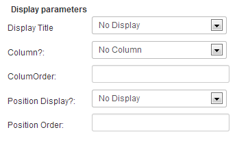

One powerful functionality with fields is the possibility to make them conditional. This means only display a field if another field has certain defined values. Combinations are pretty infinite til you can mix fields with different types. Below is a quick example :
Your ad is in a category, let's say, "Automobile/Boats", and assume that there will be different fields for automobiles and boats. If you want to show certain relevant fields only when in the boat category, you can do so using conditional fields.
Here an example of conditional fields.
The parent field doesn't need a special configuration.
Once you've created the parent field, you need to create a new field, this one will be set to be displayed only if a specific value of the parent field is selected.
Set 'Conditional Display' to Yes and specify which values of the parent field will cause the current field to be displayed.
Tips : You can associate any fields like the two above and customize your ads form like you want.
In the options of the field, you need to specify the name of the parent field.
Tips: you can copy the name of the parent field in the field list to avoid typing error
In the value field, you need to specify the value that will trigger the displaying of the conditional field.